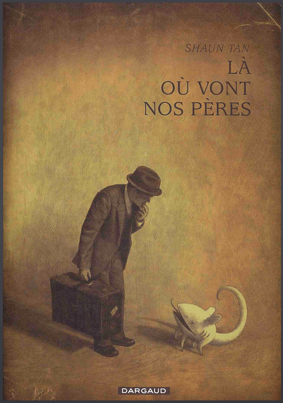

"The Arrival" de Shaun Tan
Cada año son miles de personas las que se mueven de sus lugares de origen para establecerse en otro sitio con la esperanza de tener mejores oportunidades económicas, sociales o de otro tipo.
En este contexto, The Arrival (2006) es un homenaje a la experiencia de ser un emigrante. “Extraños en tierras extrañas”, como escribiera el propio Shaun Tan, The Arrival describe una historia de alguien que deja su hogar para encontrar una nueva vida en un lugar desconocido, donde incluso las cosas cotidianas son extrañas o confusas.
Una muestra de la lucha que es sobrevivir a pesar de las dificultades del idioma, la lejanía, la pobreza y la separación, aunque aderezado con bellísimas ilustraciones de una diversidad de rostros, animales y objetos atípicos.

Esta novela gráfica se compone de 6 capítulos, con paneles matemáticamente ordenados y con la totalidad de las ilustraciones coloreadas en tonos sepia. Además, carece de diálogos o texto, por lo que la edición original en inglés no es diferente de la edición en algún otro idioma.
En mi caso, descubrí primero la edición en francés de Dargaud con el título “Là où vont nos pères” (Donde están nuestros padres), misma que recibió el premio “Fauve d’Or” del Festival Internacional de Cómics que se celebra cada año en la ciudad de Angulema.
The Arrival es uno de esos casos en los que el silencio tiene un buen motivo. Te invito, lector, a ver con la mirada silenciosa que nos presenta Shaun Tan, y que veas el mundo como un extraño en tierras extrañas.
Este texto apareció primero en Comicgram.